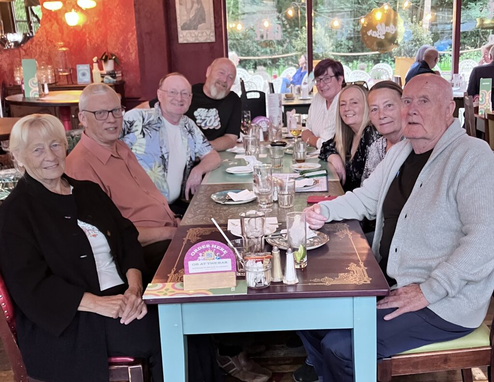

With no current clients (hint-hint) and the satisfaction of a 16 year project that went through its complete life cycle, now completed, it was a very relaxed and stress-free Boz who enjoyed his 4-week holiday back to England in August to catch up with family and friends. While I did take my Chromebook, with the very real intentions of continuing my latest novel, I must admit, it was turned on exactly three times, all to sort out on-line banking issues.
My observations from my visit, is that England seems the same as ever, and in my opinion is still the slowest train-wreck in the world, a wreck which began, I would say around the first world war, and briefly forgot about during things like the swinging sixties, and, for me at least the late nineteen eighties. People you talk to are pretty downbeat, pick a subject, any subject, there is something wrong, read a paper, somethings wrong, watch the TV.. Well you get the point, yet remove those self-same people from their normal life, take them out to a nice country pub, on a nice sunny day, and you could swear you were in a different era, and were talking to a different person.

For me, just about everything went right. The weather was good, my mum and dad were still doing well (the main reason I return). I saw just about everyone I needed to see, even travelling around the roads didn’t break a sweat. I visited a few old towns that were the same as ever, Cambridge, Oxford, Warwick, and a few others that looked a lot more worse for wear. (I won’t shame them!)
But, far too soon it was time for me to come home.
With not much to keep me entertained on my 35 hour journey back from the United Kingdom, I decided to re-read my first book series through again, with a new, and maybe a little more critical eye. I must admit I was shocked that I found nearly thirty errors. Most were the usual getting names muddled up, putting there instead of they’re, or putting your instead of you’re, but I was a bit miffed as it had been through an edit/review cycle with a paid editor, and they shouldn’t really have gotten in, in the first place. Maybe I will try a second editing pass in the future.
So, arriving home to the still wintery weather, with no current clients, and with these errors, and two pages of similar notes from a couple of readers I had been saving (Thanks Jen/Steve), I decided it was time to fix it so it puts its best face to the world.
The feedback I got was that a few sections of the book added nothing of value to the story, and another plot line really needed some clarification of how it happened. I guess when you have already wrote the ending, you cannot un-forget it, so it can make it difficult to know this is a problem. So I spent the month of September, not on my new book, but putting the bits of my first book series right.
Hopefully by my next post all this will be behind me and I can pile back into writing my next blockbuster.